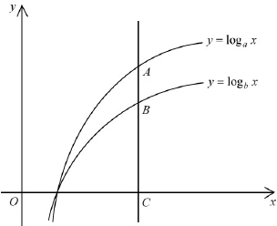

\(y=\log_a x\ (a>1)\)\(y=\log_b x\ (b>1)\)vertical line \(x=OC\)segment \(AB\)
Scroll the solution — the figure updates for each step.
HKDSE 2018 · Paper 2 · Q32
Question. The figure shows the graph of \(y=\log_a x\) and the graph of \(y=\log_b x\) on the same rectangular coordinate system, where \(a\) and \(b\) are positive constants. If a vertical line cuts the graph of \(y=\log_a x\), the graph of \(y=\log_b x\) and the \(x\)-axis at the points \(A\), \(B\) and \(C\) respectively, which of the following is/are true?
I. \(\;a > 1\)II. \(\;a > b\)III. \(\;\dfrac{AB}{BC}=\log_a\dfrac{b}{a}\)
A. I onlyB. II onlyC. I and III onlyD. II and III only

Figure (original exam diagram)
Step-by-step solution
1
Read the given figure
Both curves lie above the \(x\)-axis for \(x>1\) and both are upward sloping (increasing).
Also note that \(a\neq b\), so the two curves are distinct.
An increasing \(\log_k x\) curve means the base satisfies \(k>1\).
2
Test statement I: \(a > 1\)
Monotonicity of the Logarithm\(y=\log_{a}x\ \text{is increasing}\ \Longleftrightarrow\ a>1\)The curve \\(y=\\log_a x\\) rises with \\(x\\), so \\(a>1\\) and statement I is true.
Since \(y=\log_a x\) is an increasing function of \(x\), its base must satisfy \(a>1\).
Equivalently, because the curve passes through \((a,1)\) with \(a\) to the right of \((1,0)\).
\(\therefore\) Statement I is TRUE.
This immediately eliminates option B.
3
Compare the two curves: test statement II, \(a > b\)
For any \(x>1\), the graph of \(y=\log_a x\) lies above the graph of \(y=\log_b x\), so
\[
\log_a x>\log_b x .
\]
The comparison is easiest at \(x=b\), where \(\log_b b = 1\):
\[
\log_a b > \log_b b = 1 \quad\Longrightarrow\quad b>a .
\]
So in fact \(a i.e. \(a>b\) is false.
A bigger \(x\)-position of the point where the curve reaches height 1 means a smaller base.
4
Rewrite \(AC\) and \(BC\) using the change-of-base formula
Change of Base Formula\(\log_{k}x=\dfrac{\log_{10}x}{\log_{10}k}\)It turns the heights \\(AC\\) and \\(BC\\) into \\(\\dfrac{\\log_{10}OC}{\\log_{10}a}\\) and \\(\\dfrac{\\log_{10}OC}{\\log_{10}b}\\), whose ratio can be simplified.
\(A\) lies on \(y=\log_a x\) and \(B\) lies on \(y=\log_b x\); both have the same \(x\)-coordinate \(OC\).
Putting \(x=OC\),
\[
AC=\frac{\log_{10} OC}{\log_{10} a},\qquad
BC=\frac{\log_{10} OC}{\log_{10} b}.
\]
\(\log_k(OC)=\dfrac{\log_{10}OC}{\log_{10}k}\) — base 10 is just a convenient choice.
5
Form the ratio \(AC/BC\)
Dividing the two expressions, the common factor \(\log_{10}OC\) cancels:
\[
\frac{AC}{BC}
=\frac{\log_{10}OC/\log_{10}a}{\log_{10}OC/\log_{10}b}
=\frac{\log_{10} b}{\log_{10} a}
=\log_a b .
\]
Change of base again: \(\dfrac{\log_{10}b}{\log_{10}a}=\log_a b\).
6
Convert to \(\dfrac{AB}{BC}\) — test statement III
Quotient Law of Logarithms\(\log_{a}\dfrac{b}{a}=\log_{a}b-\log_{a}a\)Since \\(\\log_{a}a=1\\), \\(\\dfrac{AB}{BC}=\\log_{a}b-1=\\log_{a}\\dfrac{b}{a}\\), so statement III is true.
On the vertical line, \(A\) is above \(B\) and \(C\) is the \(x\)-intercept, so \(AC=AB+BC\):
\[
\frac{AB}{BC}=\frac{AC-BC}{BC}=\frac{AC}{BC}-1=\log_a b-1 .
\]
Using the logarithm law \(\log_a b-\log_a a=\log_a\dfrac{b}{a}\) (since \(\log_a a=1\)):
\[
\frac{AB}{BC}=\log_a b-\log_a a=\log_a\frac{b}{a}.
\]
\(\therefore\) Statement III is TRUE.
\(AB\) is the gap between the two curves; \(BC\) is the height of the lower curve.
7
Conclusion
I: \(a>1\) — true
II: \(a>b\) — false (in fact \(b>a\))
III: \(\dfrac{AB}{BC}=\log_a\dfrac{b}{a}\) — true
Hence only I and III are true.
Match with the options: C says “I and III only”.
Answer: C (I and III only)
PRACTICESimilar question — try it yourself
Question. It is given that \\(\log_{2}7=2.807\\) (correct to 4 significant figures). In the figure, \\(A\\) and \\(B\\) lie on the curves \\(y=\log_{2}x\\) and \\(y=\log_{7}x\\) respectively at the same \\(x\\)-coordinate, and \\(C\\) is the foot of the perpendicular on the \\(x\\)-axis. (a) Find \\(\log_{7}2\\). (b) Find \\(\dfrac{AB}{BC}\\) if \\(\dfrac{AC}{BC}=\log_{2}7\\).
Show the worked solution
Step 1. (a) By the change of base formula, \\(\log_{7}2=\dfrac{1}{\log_{2}7}=\dfrac{1}{2.807}\approx0.3562\\).
Step 2. (b) Since \\(A\\) is above \\(B\\), \\(AC=AB+BC\\), so \\(\dfrac{AB}{BC}=\dfrac{AC}{BC}-1\\).